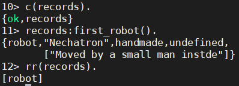

erlang学习-4-基本数据结构
记录
类似C中的结构体
定义记录
1 | -module(records). |
记录的使用
1 | -module(records). |


读取记录字段值

更新记录

共享记录定义
erlang中也有类似于C中的头文件，只不过文件的拓展名为.hrl
records.hrl定义示例
1 | -record(included,{some_file, |
引用records.hrl文件
在records.erl文件中引用头文件
1 | -include("records.hrl") |
新增测试方法
1 | included() -> #included(some_field = "Some value"). |
键/值存储
小数据量存储
属性列表(proplists)：
属性列表是形如[{Key,Value}]的元组列表。
有序字典(orddict)：
对于小于75个元素的数据量来说，有序字典在复杂性和效率之间做得很好的平衡。
大数据存储：字典和通用平衡树
字典(dict)
有序字典需要向上伸展时，字典是一个很好的选择
通用平衡树(gb_tree)
集合
基本概念同数学上的集合
ordsets
被实现为一种有序列表。适用于小集合，是最慢的一种集合
sets
实现使用的底层数据结构和dict使用的相似。sets接口和ordsets完全一样，不过支持的数据规模要大一些。和dict一样，sets更擅长读密集型的处理，如检测某个元素是否在集合中。
gb_sets
底层实现是一棵GB树。
在非读取操作方面，gb_sets要更快一些，提供的控制手段也更多一些
sofs
关于数据结构的选择：
建议在大多数情况下尽量使用gb_sets，当需要一种清晰的表示，现在自己的代码中操作这种表示时，使用ordsets，当需要=:=操作符时，使用sets
有向图
digraph
digrapg模块主要实现了有向图的构造和修改功能——操作边和顶点、寻找路径和环等
digraph_utils
digraph_utils模块则实现了图的遍历功能，环、树型图以及树性质检测，寻找邻居顶点等功能。
队列
queue模块
-------------本文结束感谢您的阅读-------------